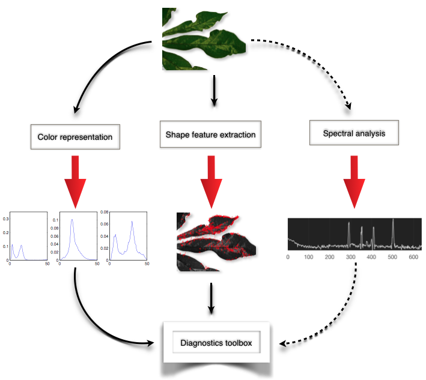

Automated mobile survey technology and spatial modeling of viral cassava diseases

Makerere University, Uganda
List of Approaches/Research Areas

We use a customised version of the open data kit (screenshots above) to carry out data collection with phones. With this we can collect image and location data, and if an expert is performing the survey they can optionally provide a diagnosis which helps to calibrate our automated system..

We will develop an application for the smartphone that enables a surveyor to take an image of a leaf infested with whiteflies and immediately get a count of the number of whiteflies. We will further develop an application that the surveyor can use to take an image of the cross-section of a necrotized root and obtain the percentage of necrosis. From our interaction with key stakeholders in crop surveillance, visual assessments by surveyors tend to be problematic. A single cassava leaf might be infested with up to a hundred whiteflies or nymphs, many of which become mobile as the underside of the leaf is exposed. Since many leaves need to be sampled across numerous plants in the survey, this makes significant demands on the time and concentration of the surveyor and is a rate-limiting task for the entire survey. The determination of the proportion of necrotized root is a faster task to assess, but it appears that judgements of these proportions are subjective, and different surveyors might score the same root differently. These techniques will therefore ease the work of surveyors in the field and ensure greater objectivity across different fields.

On the left we have 13 example plants, with their disease levels shown in the dark boxes. The contour lines indicate our calculation of the mean disease level. The histograms on the right show our predictions at what the distribution of the five disease levels will be at positions A, B and C. Based on this model, we can use our uncertainty at different places on the map to dynamically change the survey schedule (divert the survey teams to the most informative areas) and to update prices for data collection by extension workers (increase prices for areas where data is more useful). Ultimately such maps are used to plan the way in which limited resources can best be used to limit the spread of disease, for example by starting training programs for farmers in high risk areas, or calculating the best places to take healthy planting material to replace the crops in the most affected areas.

We will investigate the development of a low-cost portable spectral imaging device that can be appended to a phone and used for two purposes: first, early detection of diseases in plants where symptoms are not visible to the naked eye and second, inspection of planting materials to determine if they are disease-free. There has been a growing set of examples of diseases which can be detected early through the use of spectrometry and hyperspectral imaging for crops such as rice, wheat, citrus and tomato (Sankaran et al, 2010). Laser-induced fluorescence spectrometry, for example, has been shown to be an effective method for early-onset and non-destructive disease detection. Two types of fluorescence are produced by green leaves: (i) blue-green fluorescence in about the 400–600 nm range, and (ii) chlorophyll fluorescence in about the 650–800 nm range. Spectroscopic analysis of these can be utilized to identify signatures corresponding to particular diseases, as well as identifying nutrient deficiencies, and stresses from environmental conditions.
One of the advantages of the mobile survey technology is the potential it brings to increase the frequency and spatial extent of sampling for disease and vectors. With the large quantity of observations to be obtained in this work, and consequent statistical modeling opportunity, we expect the study to yield a set of unique datasets giving insight into the spread of crop disease.